Original Taj Mahal
Sharpened Taj Mahal
Original Breath of the Wild
Sharpened Breath of the Wild
In this project, we deal with finite difference operators and Derivative of Gaussian Filters (DoG) to do edge detection. Then, we deal with image sharpening, hybrid images, and multiresolution blending. The most important thing I learned from this project was how algorithms could be. For example, the multi-resolution blending works well with the apple and orange images given, but for other images, you have to really choose carefully, else the seam colors either don't blend well, the images are offset (even with alignment) due to different object dimensions, etc.
Here we use the finite difference operators (a vector of 1 and -1, of dimension 2x1 for Dx and 1x2 for Dy) and convolve them with the cameraman image, to view the partial derivative in the x and y directions of the cameraman image. With these, we then obtain a gradient magnitude image by adding the magnitudes squared, of the gradient values in the Dx and Dy images, then taking the square root.
|
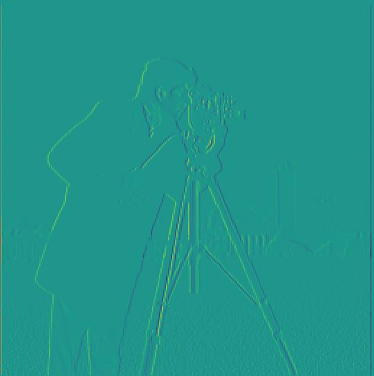 Cameraman's partial derivative in the x direction |
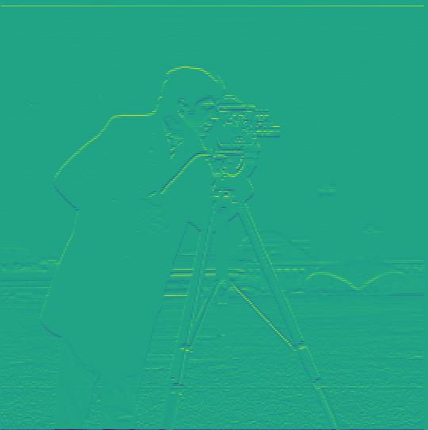 Cameraman's partial derivative in the y direction |
|
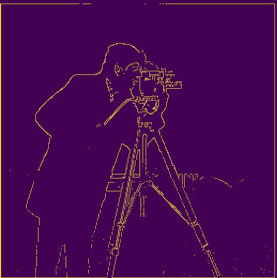 Gradient magnitude of Cameraman image |
|
The edges are thicker in this part, compared to 1.1. With this gaussian blurring step, there's less noise in the edge image, and it doesn't sacrifice the edge visibilty. Note that the difference between these two images is on the left, we run a gaussian blur, then do what was described in part 1, and on the right, we do convolution between the Dx with the Gaussian Kernel, and Dy with the Gaussian Kernel, then convolve that with the cameraman image.
|
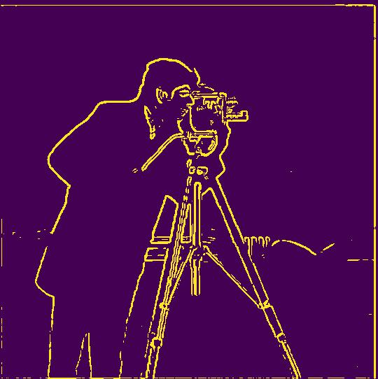 Blurred edge of Cameraman image |
DoG edge detection on Cameraman image |
Here, we extract the higher frequencies by doing the original image - the low pass filtered image. Then, we multiply the high frequency image by some alpha value (in our case, 2), and add that to the original image to obtain a sharpened image.
|
Original Taj Mahal |
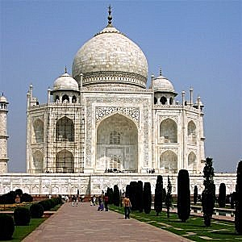 Sharpened Taj Mahal |
|
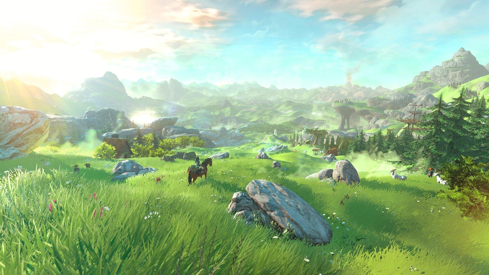 Original Breath of the Wild |
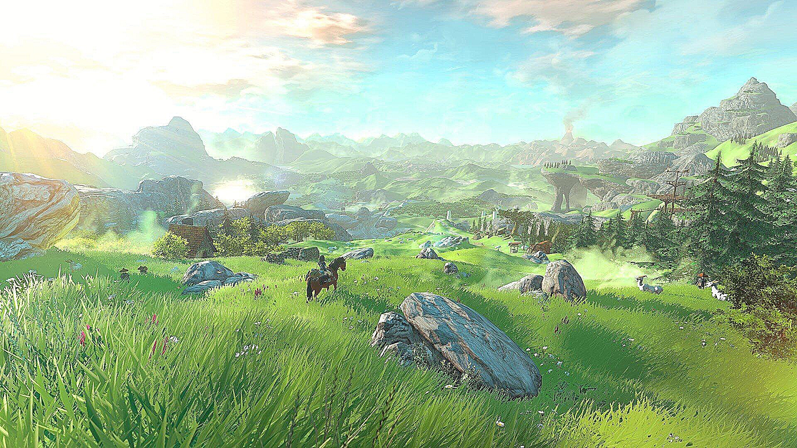 Sharpened Breath of the Wild |
Here, we have two images, one that is designated to contain mainly its high frequencies and the other containing its low frequencies. We then add them. The higher frequencies are more prominent upclose, and the lower frequencies are more prominent farther away, giving us the impression of a hybrid image. Note the failed 3rd example, as the positions are different, which tells us that this approach doesn't work well to show displacement between images.
Note that the first image is the lower frequency image, and the second image is the higher frequency image.
|
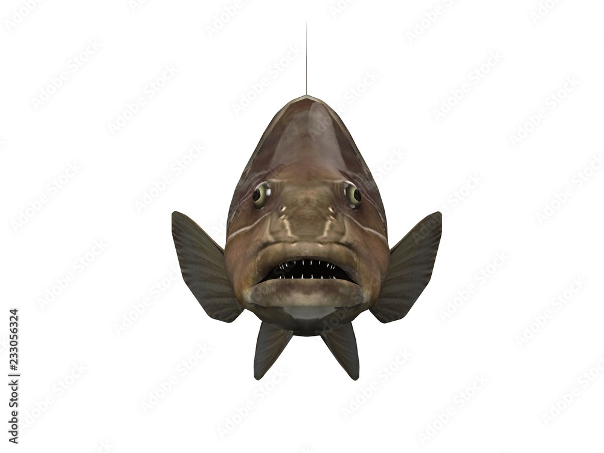 Grouper |
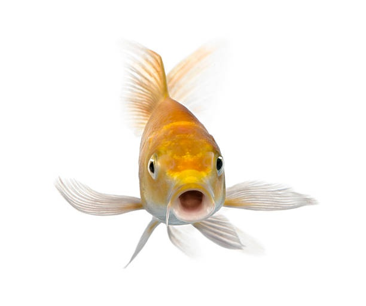 Goldfish |
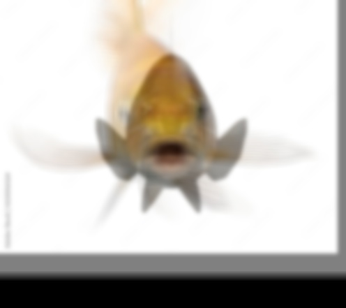 Hybrid of Grouper and Goldfish |
|
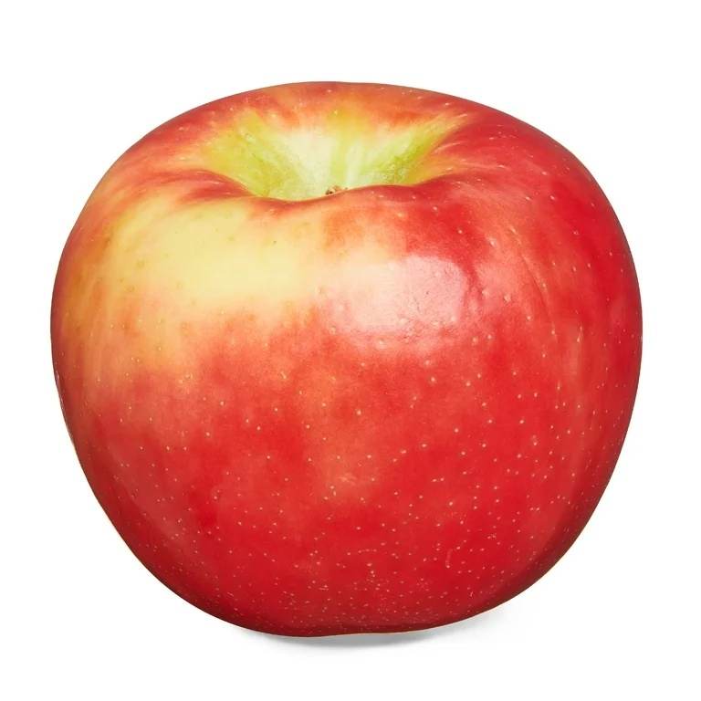 Apple |
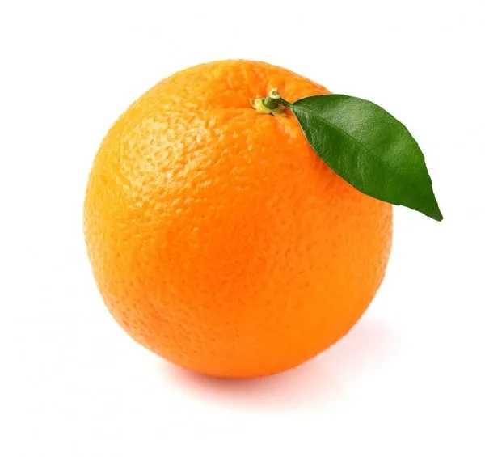 Orange |
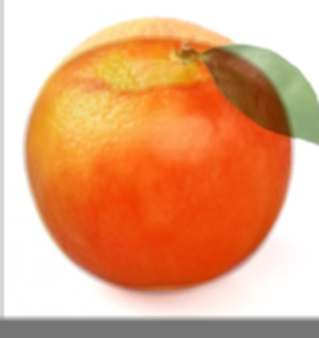 Hybrid of Apple and Orange |
|
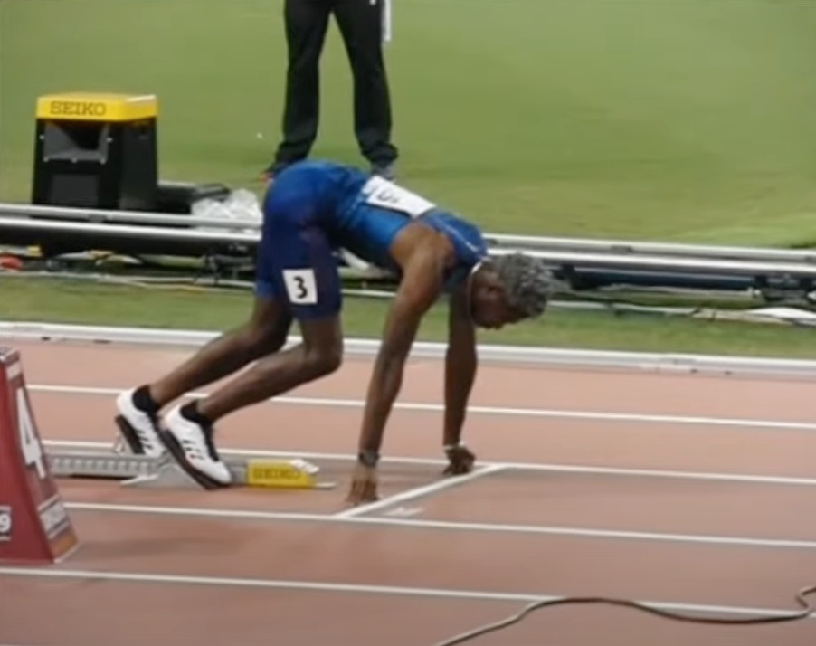 Sprint Start |
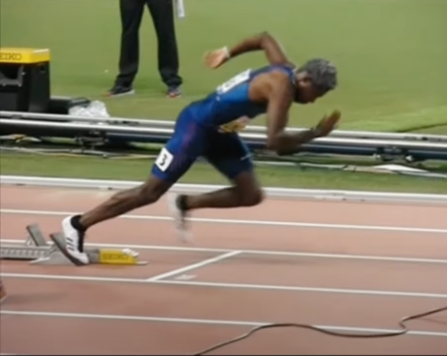 Sprint Continue |
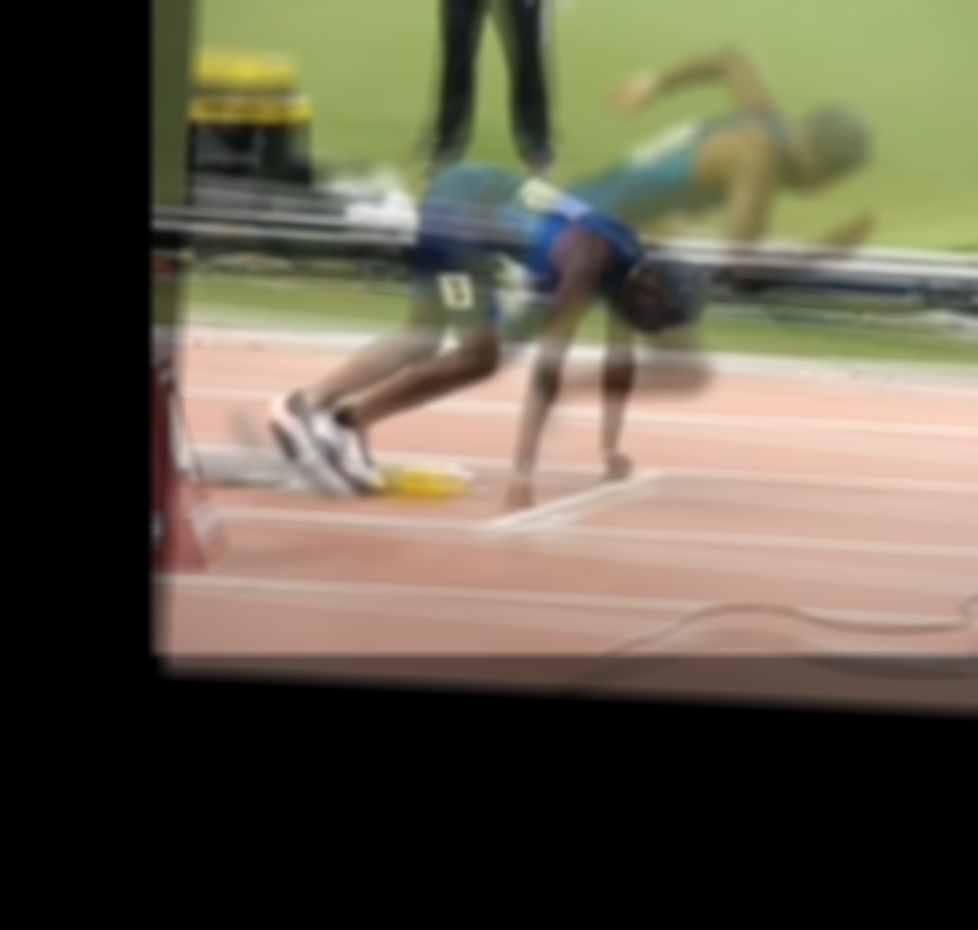 Hybrid of Sprint Start and Continue (failed example) |
This is the log magnitude fourier plots of the 1st example (the fishes).
|
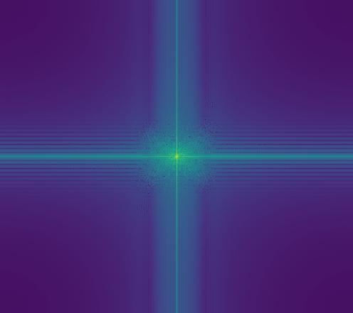 Hybrid Image Fourier Transform |
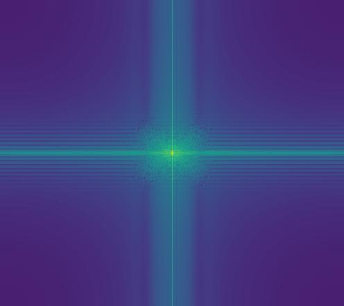 Grouper Image Fourier Transform |
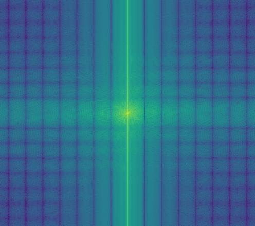 Goldfish Image Fourier Transform |
Here, we make suse of gaussian and laplacian stacks (like the pyramids, but rather than subsampling, we just keep it the same size). Note that gaussian stacks show the cumulative blurring of the image as we go further and further, while the laplacian stack shows the difference between the current level and its next level. We generate these stacks for the two images and the to be applied. To finally combine them, you just need to combine the laplacian stacks of the images using the weighting given by the mask's gaussian stacks. Finally, given the intermediate blended images at each level, add them up for the final result.
Note that the cats don't seem to blend as well as expected due to their head size being different. I decided to keep this in since it displays how the multi-resolution blending requires very curated iamges (even if the two objects/things are already similar)
|
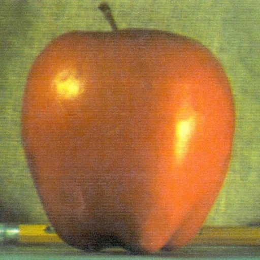 Apple |
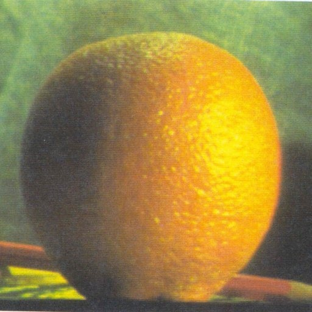 Orange |
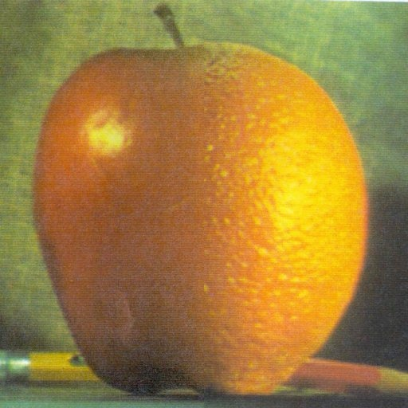
Blended Apple and Orange (Orapple)
|
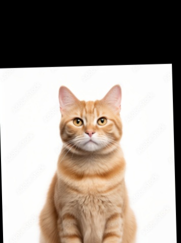 Orange Cat |
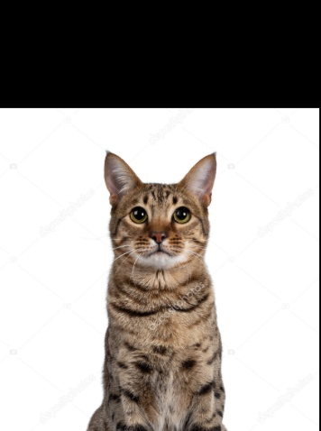 Brown Cat |
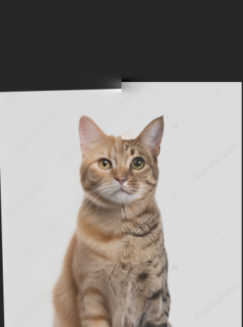 Blended Orange and Brown Cat |
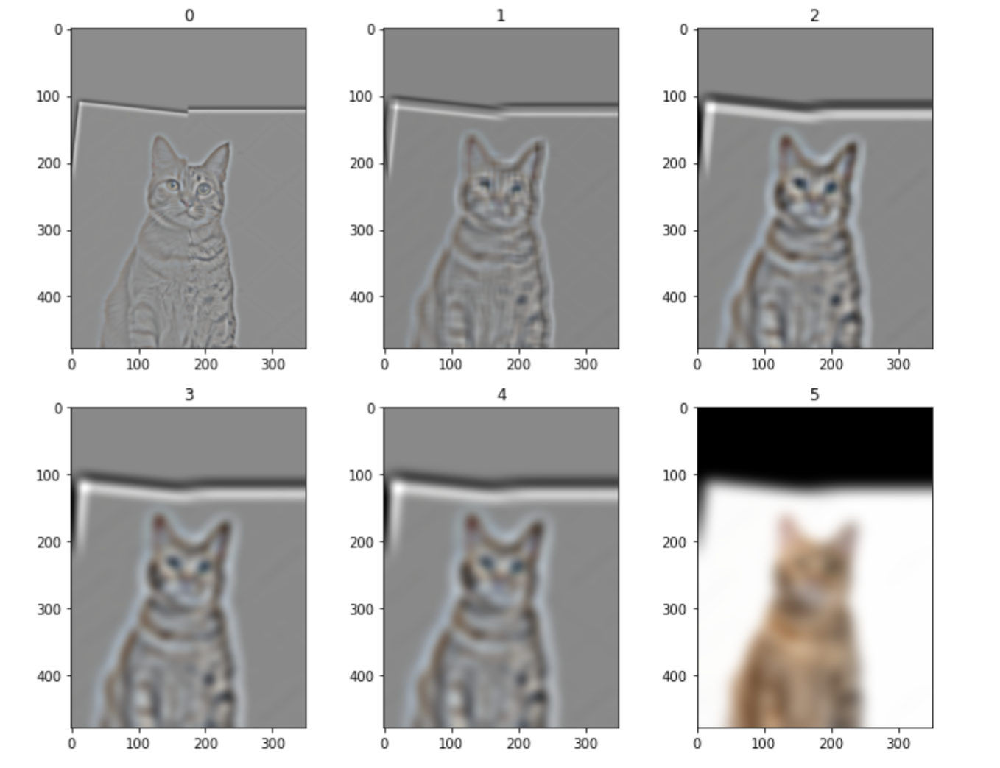
Blended Cat Gallery
|
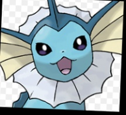 Vaporeon |
Water Bottle |
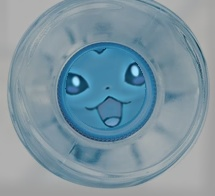 Blended Vaporeon and Water Bottle |